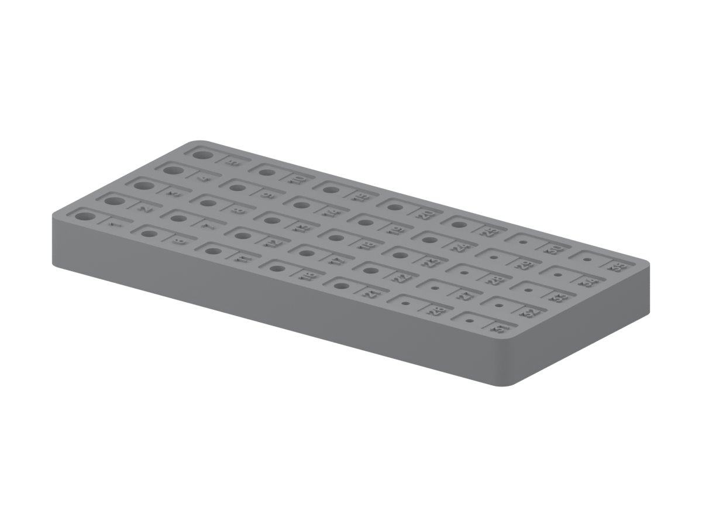
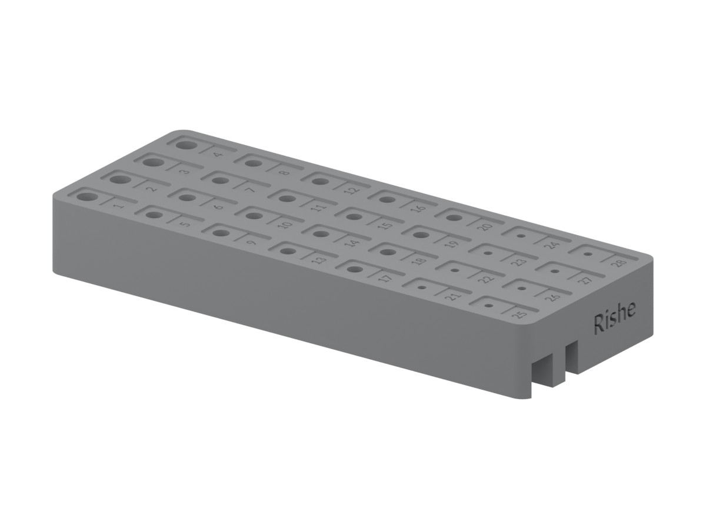
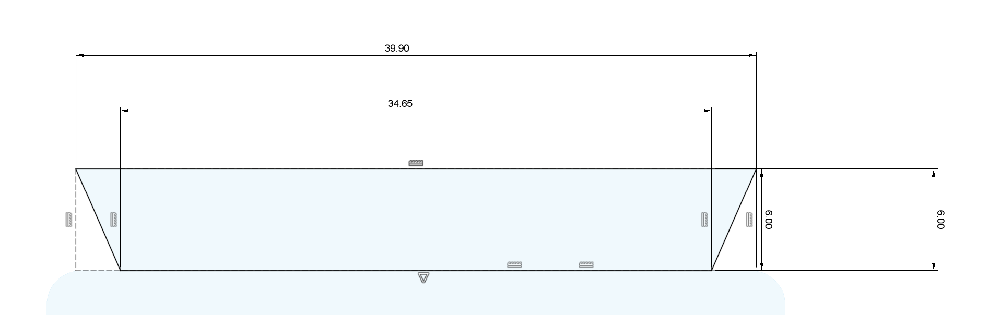
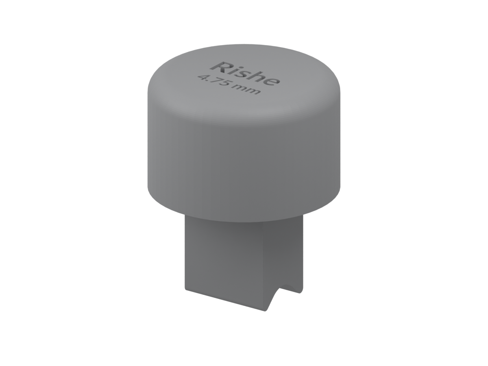
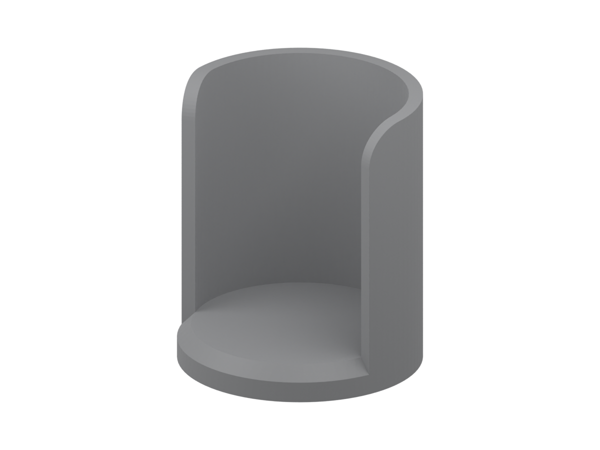

Bit storage
Generic bit holder
Give every bit a place. A numbered holder for keeping workshop tooling organised and easy to find.
1 export variantExplore →
RISHE / OPEN WORKSHOP
Useful tools, jigs and fixtures from our workshop. Explore the objects, inspect the designs, and download the files for your own setup.
Explore the objects ↓Designed in FreeCAD. Shared for non-commercial use.

01 / Generic bit holder Explore →The collection
05 designs / 06 published variants
Bit storage
Give every bit a place. A numbered holder for keeping workshop tooling organised and easy to find.

Bit storage
Numbered bit storage for a Shapeoko 5 setup. A separately maintained variant for keeping the tools you reach for close at hand.

CNC accessories
A camera-mount design for a Shapeoko setup. Start with the reference diagram and inspect the editable model to understand the mounting geometry.

Sanding
Small hand tools for shaped corners. Explore four corner and half-round profiles, then choose the geometry that suits your workpiece.

Sanding
A saved sandpaper-holder design to inspect and adapt for your workshop. Explore the CAD previews and download the editable FreeCAD source.
From file to workshop
Inspect every model before fabrication. Check scale, units, fit, clearances and material suitability in your setup.
These reference designs are not certified tooling. Check the imported geometry before use.
Shared with care
The original files are shared under CC BY-NC-ND 4.0. Non-commercial use and sharing require attribution. Commercial use and distribution of modified versions are not permitted by this license.
Read the license ↗Ask about commercial licensing →